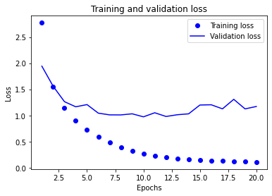
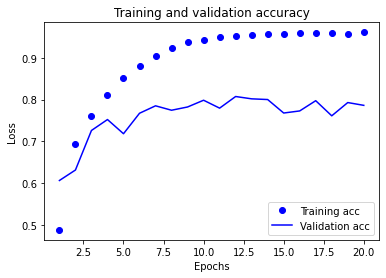

<!DOCTYPE html>
<html lang=en>
<head>
    <!-- so meta -->
    <meta charset="utf-8">
    <meta http-equiv="X-UA-Compatible" content="IE=edge">
    <meta name="HandheldFriendly" content="True">
    <meta name="viewport" content="width=device-width, initial-scale=1, maximum-scale=5" />
    <meta name="description" content="Supervised Learning : Multiclass Classification prepare train data define train variables define step&#x2F;update function define loss function   train  Importing Dependencies123456import numpy as npimport">
<meta property="og:type" content="article">
<meta property="og:title" content="MindCraft">
<meta property="og:url" content="https://zarif98sjs.github.io/dummy/MulticlassClassification/index.html">
<meta property="og:site_name" content="MindCraft">
<meta property="og:description" content="Supervised Learning : Multiclass Classification prepare train data define train variables define step&#x2F;update function define loss function   train  Importing Dependencies123456import numpy as npimport">
<meta property="og:locale" content="en_US">
<meta property="og:image" content="https://zarif98sjs.github.io/dummy/MulticlassClassification/output_26_0.png">
<meta property="og:image" content="https://zarif98sjs.github.io/dummy/MulticlassClassification/output_27_0.png">
<meta property="article:published_time" content="2021-04-27T06:01:06.884Z">
<meta property="article:modified_time" content="2020-12-23T15:27:12.000Z">
<meta property="article:author" content="Md. Zarif Ul Alam">
<meta name="twitter:card" content="summary">
<meta name="twitter:image" content="https://zarif98sjs.github.io/dummy/MulticlassClassification/output_26_0.png">
    
    
      
        
          <link rel="shortcut icon" href="/dummy/images/favicon.ico">
        
      
      
        
          <link rel="icon" type="image/png" href="/dummy/images/favicon-192x192.png" sizes="192x192">
        
      
      
        
          <link rel="apple-touch-icon" sizes="180x180" href="/dummy/images/apple-touch-icon.png">
        
      
    
    <!-- title -->
    <title>MindCraft</title>
    <!-- styles -->
    
<link rel="stylesheet" href="/dummy/css/style.css">

    <!-- persian styles -->
    
    <!-- rss -->
    
    
	<!-- mathjax -->
	
		<script type="text/x-mathjax-config">
		  MathJax.Hub.Config({
			tex2jax: {
			  skipTags: ['script', 'noscript', 'style', 'textarea', 'pre'],
			  inlineMath: [['$','$']]
			}
		  });
		</script>
		<script src='https://cdnjs.cloudflare.com/ajax/libs/mathjax/2.7.5/latest.js?config=TeX-MML-AM_CHTML' async></script>
	
<meta name="generator" content="Hexo 5.4.0"></head>

<body class="max-width mx-auto px3 ltr">
    
      <div id="header-post">
  <a id="menu-icon" href="#" aria-label="Menu"><i class="fas fa-bars fa-lg"></i></a>
  <a id="menu-icon-tablet" href="#" aria-label="Menu"><i class="fas fa-bars fa-lg"></i></a>
  <a id="top-icon-tablet" href="#" "Top" onclick="$('html, body').animate({ scrollTop: 0 }, 'fast');" style="display:none;"><i class="fas fa-chevron-up fa-lg"></i></a>
  <span id="menu">
    <span id="nav">
      <ul>
         
          <li><a href="/dummy/">Home</a></li>
         
          <li><a href="/dummy/archives/">Archive</a></li>
         
          <li><a href="https://zarif98sjs.github.io/">About Me</a></li>
        
      </ul>
    </span>
    <br/>
    <span id="actions">
      <ul>
        
        <li><a class="icon" aria-label="Previous post " href="/dummy/Regression/"><i class="fas fa-chevron-left" aria-hidden="true" onmouseover="$('#i-prev').toggle();" onmouseout="$('#i-prev').toggle();"></i></a></li>
        
        
        <li><a class="icon" aria-label="Next post " href="/dummy/BinaryClassification/"><i class="fas fa-chevron-right" aria-hidden="true" onmouseover="$('#i-next').toggle();" onmouseout="$('#i-next').toggle();"></i></a></li>
        
        <li><a class="icon" aria-label="Back to top " href="#" onclick="$('html, body').animate({ scrollTop: 0 }, 'fast');"><i class="fas fa-chevron-up" aria-hidden="true" onmouseover="$('#i-top').toggle();" onmouseout="$('#i-top').toggle();"></i></a></li>
        <li><a class="icon" aria-label="Share post " href="#"><i class="fas fa-share-alt" aria-hidden="true" onmouseover="$('#i-share').toggle();" onmouseout="$('#i-share').toggle();" onclick="$('#share').toggle();return false;"></i></a></li>
      </ul>
      <span id="i-prev" class="info" style="display:none;">Previous post</span>
      <span id="i-next" class="info" style="display:none;">Next post</span>
      <span id="i-top" class="info" style="display:none;">Back to top</span>
      <span id="i-share" class="info" style="display:none;">Share post</span>
    </span>
    <br/>
    <div id="share" style="display: none">
      <ul>
  <li><a class="icon" target="_blank" rel="noopener" href="http://www.facebook.com/sharer.php?u=https://zarif98sjs.github.io/dummy/MulticlassClassification/"><i class="fab fa-facebook " aria-hidden="true"></i></a></li>
  <li><a class="icon" target="_blank" rel="noopener" href="https://twitter.com/share?url=https://zarif98sjs.github.io/dummy/MulticlassClassification/&text="><i class="fab fa-twitter " aria-hidden="true"></i></a></li>
  <li><a class="icon" target="_blank" rel="noopener" href="http://www.linkedin.com/shareArticle?url=https://zarif98sjs.github.io/dummy/MulticlassClassification/&title="><i class="fab fa-linkedin " aria-hidden="true"></i></a></li>
  <li><a class="icon" target="_blank" rel="noopener" href="https://pinterest.com/pin/create/bookmarklet/?url=https://zarif98sjs.github.io/dummy/MulticlassClassification/&is_video=false&description="><i class="fab fa-pinterest " aria-hidden="true"></i></a></li>
  <li><a class="icon" href="mailto:?subject=&body=Check out this article: https://zarif98sjs.github.io/dummy/MulticlassClassification/"><i class="fas fa-envelope " aria-hidden="true"></i></a></li>
  <li><a class="icon" target="_blank" rel="noopener" href="https://getpocket.com/save?url=https://zarif98sjs.github.io/dummy/MulticlassClassification/&title="><i class="fab fa-get-pocket " aria-hidden="true"></i></a></li>
  <li><a class="icon" target="_blank" rel="noopener" href="http://reddit.com/submit?url=https://zarif98sjs.github.io/dummy/MulticlassClassification/&title="><i class="fab fa-reddit " aria-hidden="true"></i></a></li>
  <li><a class="icon" target="_blank" rel="noopener" href="http://www.stumbleupon.com/submit?url=https://zarif98sjs.github.io/dummy/MulticlassClassification/&title="><i class="fab fa-stumbleupon " aria-hidden="true"></i></a></li>
  <li><a class="icon" target="_blank" rel="noopener" href="http://digg.com/submit?url=https://zarif98sjs.github.io/dummy/MulticlassClassification/&title="><i class="fab fa-digg " aria-hidden="true"></i></a></li>
  <li><a class="icon" target="_blank" rel="noopener" href="http://www.tumblr.com/share/link?url=https://zarif98sjs.github.io/dummy/MulticlassClassification/&name=&description="><i class="fab fa-tumblr " aria-hidden="true"></i></a></li>
  <li><a class="icon" target="_blank" rel="noopener" href="https://news.ycombinator.com/submitlink?u=https://zarif98sjs.github.io/dummy/MulticlassClassification/&t="><i class="fab fa-hacker-news " aria-hidden="true"></i></a></li>
</ul>

    </div>
    <div id="toc">
      <ol class="toc"><li class="toc-item toc-level-1"><a class="toc-link" href="#Supervised-Learning-Multiclass-Classification"><span class="toc-number">1.</span> <span class="toc-text">Supervised Learning : Multiclass Classification</span></a><ol class="toc-child"><li class="toc-item toc-level-2"><a class="toc-link" href="#Importing-Dependencies"><span class="toc-number">1.1.</span> <span class="toc-text">Importing Dependencies</span></a></li><li class="toc-item toc-level-2"><a class="toc-link" href="#Importing-Dataset"><span class="toc-number">1.2.</span> <span class="toc-text">Importing Dataset</span></a></li><li class="toc-item toc-level-2"><a class="toc-link" href="#Preparing-the-data"><span class="toc-number">1.3.</span> <span class="toc-text">Preparing the data</span></a></li><li class="toc-item toc-level-2"><a class="toc-link" href="#Building-the-neural-network"><span class="toc-number">1.4.</span> <span class="toc-text">Building the neural network</span></a><ol class="toc-child"><li class="toc-item toc-level-3"><a class="toc-link" href="#Architecture"><span class="toc-number">1.4.1.</span> <span class="toc-text">Architecture</span></a></li><li class="toc-item toc-level-3"><a class="toc-link" href="#Compile"><span class="toc-number">1.4.2.</span> <span class="toc-text">Compile</span></a></li></ol></li><li class="toc-item toc-level-2"><a class="toc-link" href="#Validation"><span class="toc-number">1.5.</span> <span class="toc-text">Validation</span></a></li><li class="toc-item toc-level-2"><a class="toc-link" href="#Train-Fit"><span class="toc-number">1.6.</span> <span class="toc-text">Train &#x2F; Fit</span></a></li><li class="toc-item toc-level-2"><a class="toc-link" href="#Evaluate"><span class="toc-number">1.7.</span> <span class="toc-text">Evaluate</span></a></li><li class="toc-item toc-level-2"><a class="toc-link" href="#Prediction"><span class="toc-number">1.8.</span> <span class="toc-text">Prediction</span></a></li><li class="toc-item toc-level-2"><a class="toc-link" href="#Analysis-amp-Overfitting"><span class="toc-number">1.9.</span> <span class="toc-text">Analysis &amp; Overfitting</span></a></li><li class="toc-item toc-level-2"><a class="toc-link" href="#A-different-way-to-handle-the-labels-and-the-loss"><span class="toc-number">1.10.</span> <span class="toc-text">A different way to handle the labels and the loss</span></a></li></ol></li></ol>
    </div>
  </span>
</div>

    
    <div class="content index py4">
        
        <article class="post" itemscope itemtype="http://schema.org/BlogPosting">
  <header>
    
    <h1 class="posttitle" itemprop="name headline">
        
    </h1>


    <div class="meta">
      <span class="author" itemprop="author" itemscope itemtype="http://schema.org/Person">
        <span itemprop="name">Md. Zarif Ul Alam</span>
      </span>
      
    <div class="postdate">
      
        <time datetime="2021-04-27T06:01:06.884Z" itemprop="datePublished">2021-04-27</time>
        
      
    </div>


      

      

    </div>
  </header>
  

  <div class="content" itemprop="articleBody">
    <h1 id="Supervised-Learning-Multiclass-Classification"><a href="#Supervised-Learning-Multiclass-Classification" class="headerlink" title="Supervised Learning : Multiclass Classification"></a>Supervised Learning : Multiclass Classification</h1><ul>
<li><strong>prepare train data</strong></li>
<li><strong>define train variables</strong></li>
<li><strong>define step/update function</strong><ul>
<li><strong>define loss function</strong></li>
</ul>
</li>
<li><strong>train</strong></li>
</ul>
<h2 id="Importing-Dependencies"><a href="#Importing-Dependencies" class="headerlink" title="Importing Dependencies"></a>Importing Dependencies</h2><figure class="highlight python"><table><tr><td class="gutter"><pre><span class="line">1</span><br><span class="line">2</span><br><span class="line">3</span><br><span class="line">4</span><br><span class="line">5</span><br><span class="line">6</span><br></pre></td><td class="code"><pre><span class="line"><span class="keyword">import</span> numpy <span class="keyword">as</span> np</span><br><span class="line"><span class="keyword">import</span> matplotlib.pyplot <span class="keyword">as</span> plt</span><br><span class="line"><span class="keyword">import</span> tensorflow <span class="keyword">as</span> tf</span><br><span class="line"></span><br><span class="line"><span class="keyword">from</span> tensorflow.keras <span class="keyword">import</span> models, layers, optimizers, losses, metrics</span><br><span class="line"><span class="keyword">from</span> tensorflow.keras.datasets <span class="keyword">import</span> reuters</span><br></pre></td></tr></table></figure>

<h2 id="Importing-Dataset"><a href="#Importing-Dataset" class="headerlink" title="Importing Dataset"></a>Importing Dataset</h2><figure class="highlight python"><table><tr><td class="gutter"><pre><span class="line">1</span><br><span class="line">2</span><br><span class="line">3</span><br></pre></td><td class="code"><pre><span class="line">LIMIT_WORD = <span class="number">10000</span></span><br><span class="line"></span><br><span class="line">(train_data, train_labels), (test_data, test_labels) = reuters.load_data(num_words=LIMIT_WORD)</span><br></pre></td></tr></table></figure>

<pre><code>Downloading data from https://storage.googleapis.com/tensorflow/tf-keras-datasets/reuters.npz
2113536/2110848 [==============================] - 2s 1us/step - ETA: 0s


D:\Anaconda3\envs\tf_env\lib\site-packages\tensorflow_core\python\keras\datasets\reuters.py:113: VisibleDeprecationWarning: Creating an ndarray from ragged nested sequences (which is a list-or-tuple of lists-or-tuples-or ndarrays with different lengths or shapes) is deprecated. If you meant to do this, you must specify &#39;dtype=object&#39; when creating the ndarray
  x_train, y_train = np.array(xs[:idx]), np.array(labels[:idx])
D:\Anaconda3\envs\tf_env\lib\site-packages\tensorflow_core\python\keras\datasets\reuters.py:114: VisibleDeprecationWarning: Creating an ndarray from ragged nested sequences (which is a list-or-tuple of lists-or-tuples-or ndarrays with different lengths or shapes) is deprecated. If you meant to do this, you must specify &#39;dtype=object&#39; when creating the ndarray
  x_test, y_test = np.array(xs[idx:]), np.array(labels[idx:])
</code></pre>
<figure class="highlight python"><table><tr><td class="gutter"><pre><span class="line">1</span><br><span class="line">2</span><br></pre></td><td class="code"><pre><span class="line"><span class="built_in">print</span>(train_data.shape)</span><br><span class="line"><span class="built_in">print</span>(test_data.shape)</span><br></pre></td></tr></table></figure>

<pre><code>(8982,)
(2246,)
</code></pre>
<figure class="highlight python"><table><tr><td class="gutter"><pre><span class="line">1</span><br><span class="line">2</span><br><span class="line">3</span><br><span class="line">4</span><br><span class="line">5</span><br><span class="line">6</span><br><span class="line">7</span><br><span class="line">8</span><br><span class="line">9</span><br><span class="line">10</span><br><span class="line">11</span><br><span class="line">12</span><br><span class="line">13</span><br><span class="line">14</span><br><span class="line">15</span><br><span class="line">16</span><br></pre></td><td class="code"><pre><span class="line"><span class="function"><span class="keyword">def</span> <span class="title">convert_to_english</span>(<span class="params">sequence</span>):</span></span><br><span class="line">    <span class="comment"># word_index is a dictionary mapping words to an integer index</span></span><br><span class="line">    word_index = reuters.get_word_index()</span><br><span class="line"></span><br><span class="line">    <span class="comment"># We reverse it, mapping integer indices to words</span></span><br><span class="line">    reverse_word_index = <span class="built_in">dict</span>(</span><br><span class="line">        [(value, key) <span class="keyword">for</span> (key, value) <span class="keyword">in</span> word_index.items()]</span><br><span class="line">    )</span><br><span class="line"></span><br><span class="line">    <span class="comment"># We decode the review; note that our indices were offset by 3</span></span><br><span class="line">    <span class="comment"># because 0, 1 and 2 are reserved indices for &quot;padding&quot;, &quot;start of sequence&quot;, and &quot;unknown&quot;.</span></span><br><span class="line">    decoded_review = <span class="string">&quot; &quot;</span>.join(</span><br><span class="line">        [reverse_word_index.get(i - <span class="number">3</span>, <span class="string">&#x27;?&#x27;</span>) <span class="keyword">for</span> i <span class="keyword">in</span> sequence] <span class="comment">## if not found replace with &#x27;?&#x27;</span></span><br><span class="line">    )</span><br><span class="line">    <span class="keyword">return</span> decoded_review</span><br><span class="line"></span><br></pre></td></tr></table></figure>


<figure class="highlight python"><table><tr><td class="gutter"><pre><span class="line">1</span><br></pre></td><td class="code"><pre><span class="line"><span class="built_in">print</span>(convert_to_english(train_data[<span class="number">0</span>]))</span><br></pre></td></tr></table></figure>

<pre><code>Downloading data from https://storage.googleapis.com/tensorflow/tf-keras-datasets/reuters_word_index.json
557056/550378 [==============================] - 1s 1us/step
? ? ? said as a result of its december acquisition of space co it expects earnings per share in 1987 of 1 15 to 1 30 dlrs per share up from 70 cts in 1986 the company said pretax net should rise to nine to 10 mln dlrs from six mln dlrs in 1986 and rental operation revenues to 19 to 22 mln dlrs from 12 5 mln dlrs it said cash flow per share this year should be 2 50 to three dlrs reuter 3
</code></pre>
<h2 id="Preparing-the-data"><a href="#Preparing-the-data" class="headerlink" title="Preparing the data"></a>Preparing the data</h2><p>We cannot feed lists of integers into a neural network. We have to turn our lists into tensors. There are two ways we could do that:</p>
<ul>
<li>We could pad our lists so that they all have the same length, and turn them into an integer tensor of shape (samples, word_indices), then use as first layer in our network a layer capable of handling such integer tensors (the Embedding layer, which we will cover in detail later in the book).</li>
<li>We could one-hot-encode our lists to turn them into vectors of 0s and 1s. Concretely, this would mean for instance turning the sequence [3, 5] into a 10,000-dimensional vector that would be all-zeros except for indices 3 and 5, which would be ones. Then we could use as first layer in our network a Dense layer, capable of handling floating point vector data.</li>
</ul>
<p>We will go with the latter solution. Let’s vectorize our data, which we will do manually for maximum clarity:</p>
<figure class="highlight python"><table><tr><td class="gutter"><pre><span class="line">1</span><br><span class="line">2</span><br><span class="line">3</span><br><span class="line">4</span><br><span class="line">5</span><br><span class="line">6</span><br></pre></td><td class="code"><pre><span class="line"><span class="comment">## one hot encoding for data</span></span><br><span class="line"><span class="function"><span class="keyword">def</span> <span class="title">vectorize_sequences</span>(<span class="params">sequences, dimension=LIMIT_WORD</span>):</span></span><br><span class="line">    results = np.zeros((<span class="built_in">len</span>(sequences), dimension)) <span class="comment"># Create an all-zero matrix of shape (len(sequences), dimension)</span></span><br><span class="line">    <span class="keyword">for</span> i, sequence <span class="keyword">in</span> <span class="built_in">enumerate</span>(sequences):</span><br><span class="line">        results[i, sequence] = <span class="number">1</span> <span class="comment"># set specific indices of results[i] to 1s</span></span><br><span class="line">    <span class="keyword">return</span> results</span><br></pre></td></tr></table></figure>


<figure class="highlight python"><table><tr><td class="gutter"><pre><span class="line">1</span><br><span class="line">2</span><br><span class="line">3</span><br></pre></td><td class="code"><pre><span class="line"><span class="comment">## vectorize train test data</span></span><br><span class="line">x_train = vectorize_sequences(train_data)</span><br><span class="line">x_test = vectorize_sequences(test_data)</span><br></pre></td></tr></table></figure>


<figure class="highlight python"><table><tr><td class="gutter"><pre><span class="line">1</span><br></pre></td><td class="code"><pre><span class="line"><span class="built_in">print</span>(x_train[<span class="number">0</span>])</span><br></pre></td></tr></table></figure>

<pre><code>[0. 1. 1. ... 0. 0. 0.]
</code></pre>
<figure class="highlight python"><table><tr><td class="gutter"><pre><span class="line">1</span><br><span class="line">2</span><br><span class="line">3</span><br><span class="line">4</span><br><span class="line">5</span><br><span class="line">6</span><br></pre></td><td class="code"><pre><span class="line"><span class="comment">## one hot encoding for label</span></span><br><span class="line"><span class="function"><span class="keyword">def</span> <span class="title">to_one_hot</span>(<span class="params">labels, dimension=<span class="number">46</span></span>):</span></span><br><span class="line">    results = np.zeros((<span class="built_in">len</span>(labels), dimension)) <span class="comment"># Create an all-zero matrix of shape (len(sequences), dimension)</span></span><br><span class="line">    <span class="keyword">for</span> i, labels <span class="keyword">in</span> <span class="built_in">enumerate</span>(labels):</span><br><span class="line">        results[i, labels] = <span class="number">1</span> <span class="comment"># set specific indices of results[i] to 1s</span></span><br><span class="line">    <span class="keyword">return</span> results</span><br></pre></td></tr></table></figure>


<figure class="highlight python"><table><tr><td class="gutter"><pre><span class="line">1</span><br><span class="line">2</span><br><span class="line">3</span><br><span class="line">4</span><br><span class="line">5</span><br><span class="line">6</span><br><span class="line">7</span><br><span class="line">8</span><br><span class="line">9</span><br></pre></td><td class="code"><pre><span class="line"><span class="comment">## vectorize train test labels</span></span><br><span class="line">y_train = to_one_hot(train_labels)</span><br><span class="line">y_test = to_one_hot(test_labels)</span><br><span class="line"></span><br><span class="line"><span class="comment">## can also use builting keras function</span></span><br><span class="line"><span class="comment"># from keras.utils.np_utils import to_categorical</span></span><br><span class="line"><span class="comment">#</span></span><br><span class="line"><span class="comment"># y_train = to_categorical(train_labels)</span></span><br><span class="line"><span class="comment"># y_test = to_categorical(test_labels)</span></span><br></pre></td></tr></table></figure>


<figure class="highlight python"><table><tr><td class="gutter"><pre><span class="line">1</span><br></pre></td><td class="code"><pre><span class="line"><span class="built_in">print</span>(y_train[<span class="number">0</span>])</span><br></pre></td></tr></table></figure>

<pre><code>[0. 0. 0. 1. 0. 0. 0. 0. 0. 0. 0. 0. 0. 0. 0. 0. 0. 0. 0. 0. 0. 0. 0. 0.
 0. 0. 0. 0. 0. 0. 0. 0. 0. 0. 0. 0. 0. 0. 0. 0. 0. 0. 0. 0. 0. 0.]
</code></pre>
<h2 id="Building-the-neural-network"><a href="#Building-the-neural-network" class="headerlink" title="Building the neural network"></a>Building the neural network</h2><h3 id="Architecture"><a href="#Architecture" class="headerlink" title="Architecture"></a>Architecture</h3><ul>
<li><strong>Intermediate Dense Layer : 2 , Hidden Units : 64 , Activation : Relu</strong></li>
<li><strong>Output Layer : 46 , Activation : Softmax</strong></li>
</ul>
<p><strong>the number of hidden units in the intermediate layer should be large so that it can learn 46 different class<br>, small layer can cause information bottleneck , permanently dropping relevant information</strong></p>
<p><strong>As this is a multiclass classification problem ,<br>we will use softmax activation function in the output layer .<br>the network will output a probability distribution over the 46 different output classes , all of which will sum to 1</strong></p>
<h3 id="Compile"><a href="#Compile" class="headerlink" title="Compile"></a>Compile</h3><p><strong>Lastly, we need to pick a loss function and an optimizer.<br>The best loss function to use in this case is categorical_crossentropy .<br>It measures the distance between two probability distributions:<br>here, between the probability distribution output by the network and the true distribution of the labels.<br>By minimizing the distance between these two distributions,<br>you train the network to output something as close as possible to the true labels.</strong></p>
<ul>
<li><strong>Loss Function : categorical_crossentropy</strong></li>
<li><strong>Optimizer : rmsprop</strong></li>
</ul>
<figure class="highlight python"><table><tr><td class="gutter"><pre><span class="line">1</span><br><span class="line">2</span><br><span class="line">3</span><br><span class="line">4</span><br><span class="line">5</span><br><span class="line">6</span><br><span class="line">7</span><br><span class="line">8</span><br><span class="line">9</span><br><span class="line">10</span><br><span class="line">11</span><br><span class="line">12</span><br><span class="line">13</span><br></pre></td><td class="code"><pre><span class="line"><span class="function"><span class="keyword">def</span> <span class="title">get_model</span>():</span></span><br><span class="line">    model = models.Sequential()</span><br><span class="line">    model.add(layers.Dense(<span class="number">64</span>, activation=<span class="string">&#x27;relu&#x27;</span>, input_shape=(LIMIT_WORD,)))</span><br><span class="line">    model.add(layers.Dense(<span class="number">64</span>, activation=<span class="string">&#x27;relu&#x27;</span>))</span><br><span class="line">    model.add(layers.Dense(<span class="number">46</span>, activation=<span class="string">&#x27;softmax&#x27;</span>))</span><br><span class="line"></span><br><span class="line">    model.<span class="built_in">compile</span>(</span><br><span class="line">    optimizer=optimizers.RMSprop(lr=<span class="number">0.001</span>),</span><br><span class="line">    loss=losses.categorical_crossentropy,</span><br><span class="line">    metrics=[metrics.categorical_accuracy]</span><br><span class="line">    )</span><br><span class="line"></span><br><span class="line">    <span class="keyword">return</span> model;</span><br></pre></td></tr></table></figure>

<h2 id="Validation"><a href="#Validation" class="headerlink" title="Validation"></a>Validation</h2><ul>
<li><strong>Hold Out Validation</strong></li>
</ul>
<figure class="highlight python"><table><tr><td class="gutter"><pre><span class="line">1</span><br></pre></td><td class="code"><pre><span class="line"><span class="built_in">print</span>(x_train.shape[<span class="number">0</span>])</span><br></pre></td></tr></table></figure>

<pre><code>8982
</code></pre>
<figure class="highlight python"><table><tr><td class="gutter"><pre><span class="line">1</span><br><span class="line">2</span><br></pre></td><td class="code"><pre><span class="line">num_of_validation_sample = <span class="built_in">int</span>(x_train.shape[<span class="number">0</span>]*<span class="number">0.2</span>)</span><br><span class="line"><span class="built_in">print</span>(num_of_validation_sample)</span><br></pre></td></tr></table></figure>

<pre><code>1796
</code></pre>
<figure class="highlight python"><table><tr><td class="gutter"><pre><span class="line">1</span><br><span class="line">2</span><br><span class="line">3</span><br><span class="line">4</span><br><span class="line">5</span><br><span class="line">6</span><br><span class="line">7</span><br></pre></td><td class="code"><pre><span class="line"><span class="comment">## don&#x27;t use random here , as the labels are separate</span></span><br><span class="line"></span><br><span class="line">x_val = x_train[:num_of_validation_sample]</span><br><span class="line">partial_x_train = x_train[num_of_validation_sample:]</span><br><span class="line"></span><br><span class="line">y_val = y_train[:num_of_validation_sample]</span><br><span class="line">partial_y_train = y_train[num_of_validation_sample:]</span><br></pre></td></tr></table></figure>

<h2 id="Train-Fit"><a href="#Train-Fit" class="headerlink" title="Train / Fit"></a>Train / Fit</h2><figure class="highlight python"><table><tr><td class="gutter"><pre><span class="line">1</span><br><span class="line">2</span><br><span class="line">3</span><br><span class="line">4</span><br><span class="line">5</span><br><span class="line">6</span><br><span class="line">7</span><br><span class="line">8</span><br><span class="line">9</span><br></pre></td><td class="code"><pre><span class="line">model = get_model()</span><br><span class="line"></span><br><span class="line">history = model.fit(</span><br><span class="line">    partial_x_train,</span><br><span class="line">    partial_y_train,</span><br><span class="line">    epochs=<span class="number">20</span>,</span><br><span class="line">    batch_size=<span class="number">512</span>,</span><br><span class="line">    validation_data=(x_val, y_val)</span><br><span class="line">)</span><br></pre></td></tr></table></figure>

<pre><code>Train on 7186 samples, validate on 1796 samples
Epoch 1/20
7186/7186 [==============================] - 2s 263us/sample - loss: 2.7741 - categorical_accuracy: 0.4880 - val_loss: 1.9426 - val_categorical_accuracy: 0.6063
Epoch 2/20
7186/7186 [==============================] - 1s 118us/sample - loss: 1.5439 - categorical_accuracy: 0.6948 - val_loss: 1.5580 - val_categorical_accuracy: 0.6314
Epoch 3/20
7186/7186 [==============================] - 1s 113us/sample - loss: 1.1424 - categorical_accuracy: 0.7599 - val_loss: 1.2634 - val_categorical_accuracy: 0.7261
Epoch 4/20
7186/7186 [==============================] - 1s 118us/sample - loss: 0.8985 - categorical_accuracy: 0.8103 - val_loss: 1.1652 - val_categorical_accuracy: 0.7522
Epoch 5/20
7186/7186 [==============================] - 1s 109us/sample - loss: 0.7243 - categorical_accuracy: 0.8519 - val_loss: 1.2074 - val_categorical_accuracy: 0.7183
Epoch 6/20
7186/7186 [==============================] - 1s 110us/sample - loss: 0.5923 - categorical_accuracy: 0.8814 - val_loss: 1.0435 - val_categorical_accuracy: 0.7673
Epoch 7/20
7186/7186 [==============================] - 1s 107us/sample - loss: 0.4817 - categorical_accuracy: 0.9044 - val_loss: 1.0104 - val_categorical_accuracy: 0.7851
Epoch 8/20
7186/7186 [==============================] - 1s 102us/sample - loss: 0.3897 - categorical_accuracy: 0.9233 - val_loss: 1.0097 - val_categorical_accuracy: 0.7745
Epoch 9/20
7186/7186 [==============================] - 1s 105us/sample - loss: 0.3223 - categorical_accuracy: 0.9368 - val_loss: 1.0310 - val_categorical_accuracy: 0.7823
Epoch 10/20
7186/7186 [==============================] - 1s 101us/sample - loss: 0.2704 - categorical_accuracy: 0.9431 - val_loss: 0.9731 - val_categorical_accuracy: 0.7984
Epoch 11/20
7186/7186 [==============================] - 1s 100us/sample - loss: 0.2286 - categorical_accuracy: 0.9489 - val_loss: 1.0508 - val_categorical_accuracy: 0.7795
Epoch 12/20
7186/7186 [==============================] - 1s 99us/sample - loss: 0.2015 - categorical_accuracy: 0.9532 - val_loss: 0.9798 - val_categorical_accuracy: 0.8073
Epoch 13/20
7186/7186 [==============================] - 1s 100us/sample - loss: 0.1754 - categorical_accuracy: 0.9545 - val_loss: 1.0130 - val_categorical_accuracy: 0.8018
Epoch 14/20
7186/7186 [==============================] - 1s 103us/sample - loss: 0.1593 - categorical_accuracy: 0.9573 - val_loss: 1.0304 - val_categorical_accuracy: 0.8001
Epoch 15/20
7186/7186 [==============================] - 1s 103us/sample - loss: 0.1451 - categorical_accuracy: 0.9576 - val_loss: 1.1990 - val_categorical_accuracy: 0.7678
Epoch 16/20
7186/7186 [==============================] - 1s 105us/sample - loss: 0.1344 - categorical_accuracy: 0.9585 - val_loss: 1.2040 - val_categorical_accuracy: 0.7728
Epoch 17/20
7186/7186 [==============================] - 1s 102us/sample - loss: 0.1258 - categorical_accuracy: 0.9605 - val_loss: 1.1260 - val_categorical_accuracy: 0.7973
Epoch 18/20
7186/7186 [==============================] - 1s 106us/sample - loss: 0.1171 - categorical_accuracy: 0.9585 - val_loss: 1.3081 - val_categorical_accuracy: 0.7611
Epoch 19/20
7186/7186 [==============================] - 1s 110us/sample - loss: 0.1156 - categorical_accuracy: 0.9571 - val_loss: 1.1250 - val_categorical_accuracy: 0.7929
Epoch 20/20
7186/7186 [==============================] - 1s 101us/sample - loss: 0.1065 - categorical_accuracy: 0.9612 - val_loss: 1.1712 - val_categorical_accuracy: 0.7862
</code></pre>
<p><strong>Note that the call to <code>model.fit()</code> returns a <code>history</code> object.<br>This object has a member history, which is a dictionary containing data about everything<br>that happened during training. Let’s take a look at it:</strong></p>
<figure class="highlight python"><table><tr><td class="gutter"><pre><span class="line">1</span><br><span class="line">2</span><br></pre></td><td class="code"><pre><span class="line">history_dict = history.history</span><br><span class="line">history_dict.keys()</span><br></pre></td></tr></table></figure>


<pre><code>dict_keys([&#39;loss&#39;, &#39;categorical_accuracy&#39;, &#39;val_loss&#39;, &#39;val_categorical_accuracy&#39;])
</code></pre>
<figure class="highlight python"><table><tr><td class="gutter"><pre><span class="line">1</span><br><span class="line">2</span><br><span class="line">3</span><br><span class="line">4</span><br><span class="line">5</span><br><span class="line">6</span><br></pre></td><td class="code"><pre><span class="line"><span class="keyword">import</span> matplotlib.pyplot <span class="keyword">as</span> plt</span><br><span class="line"></span><br><span class="line">acc = history.history[<span class="string">&#x27;categorical_accuracy&#x27;</span>]</span><br><span class="line">val_acc = history.history[<span class="string">&#x27;val_categorical_accuracy&#x27;</span>]</span><br><span class="line">loss = history.history[<span class="string">&#x27;loss&#x27;</span>]</span><br><span class="line">val_loss = history.history[<span class="string">&#x27;val_loss&#x27;</span>]</span><br></pre></td></tr></table></figure>


<figure class="highlight python"><table><tr><td class="gutter"><pre><span class="line">1</span><br><span class="line">2</span><br><span class="line">3</span><br><span class="line">4</span><br><span class="line">5</span><br><span class="line">6</span><br><span class="line">7</span><br><span class="line">8</span><br><span class="line">9</span><br><span class="line">10</span><br><span class="line">11</span><br><span class="line">12</span><br></pre></td><td class="code"><pre><span class="line">epochs = <span class="built_in">range</span>(<span class="number">1</span>, <span class="built_in">len</span>(acc) + <span class="number">1</span>)</span><br><span class="line"></span><br><span class="line"><span class="comment"># &quot;bo&quot; is for &quot;blue dot&quot;</span></span><br><span class="line">plt.plot(epochs, loss, <span class="string">&#x27;bo&#x27;</span>, label=<span class="string">&#x27;Training loss&#x27;</span>)</span><br><span class="line"><span class="comment"># b is for &quot;solid blue line&quot;</span></span><br><span class="line">plt.plot(epochs, val_loss, <span class="string">&#x27;b&#x27;</span>, label=<span class="string">&#x27;Validation loss&#x27;</span>)</span><br><span class="line">plt.title(<span class="string">&#x27;Training and validation loss&#x27;</span>)</span><br><span class="line">plt.xlabel(<span class="string">&#x27;Epochs&#x27;</span>)</span><br><span class="line">plt.ylabel(<span class="string">&#x27;Loss&#x27;</span>)</span><br><span class="line">plt.legend()</span><br><span class="line"></span><br><span class="line">plt.show()</span><br></pre></td></tr></table></figure>


<p></p>
<figure class="highlight python"><table><tr><td class="gutter"><pre><span class="line">1</span><br><span class="line">2</span><br><span class="line">3</span><br><span class="line">4</span><br><span class="line">5</span><br><span class="line">6</span><br><span class="line">7</span><br><span class="line">8</span><br><span class="line">9</span><br><span class="line">10</span><br></pre></td><td class="code"><pre><span class="line">plt.clf()   <span class="comment"># clear figure</span></span><br><span class="line"></span><br><span class="line">plt.plot(epochs, acc, <span class="string">&#x27;bo&#x27;</span>, label=<span class="string">&#x27;Training acc&#x27;</span>)</span><br><span class="line">plt.plot(epochs, val_acc, <span class="string">&#x27;b&#x27;</span>, label=<span class="string">&#x27;Validation acc&#x27;</span>)</span><br><span class="line">plt.title(<span class="string">&#x27;Training and validation accuracy&#x27;</span>)</span><br><span class="line">plt.xlabel(<span class="string">&#x27;Epochs&#x27;</span>)</span><br><span class="line">plt.ylabel(<span class="string">&#x27;Loss&#x27;</span>)</span><br><span class="line">plt.legend()</span><br><span class="line"></span><br><span class="line">plt.show()</span><br></pre></td></tr></table></figure>


<p></p>
<p><strong>As you can see, the training loss decreases with every epoch and the training accuracy increases with every epoch. That’s what you would expect when running gradient descent optimization – the quantity you are trying to minimize should get lower with every iteration</strong></p>
<p><strong>But that isn’t the case for the validation loss and accuracy: they seem to peak at the 10th epoch. This is an example of what we were warning against earlier: a model that performs better on the training data isn’t necessarily a model that will do better on data it has never seen before</strong></p>
<p><strong>In precise terms, what you are seeing is “overfitting”: after the 10th epoch, we are over-optimizing on the training data, and we ended up learning representations that are specific to the training data and do not generalize to data outside of the training set.</strong></p>
<p><strong>In this case, to prevent overfitting, we could simply stop training after 10 epochs.</strong></p>
<h2 id="Evaluate"><a href="#Evaluate" class="headerlink" title="Evaluate"></a>Evaluate</h2><figure class="highlight python"><table><tr><td class="gutter"><pre><span class="line">1</span><br></pre></td><td class="code"><pre><span class="line">results = model.evaluate(x_test, y_test)</span><br></pre></td></tr></table></figure>

<pre><code>2246/2246 [==============================] - 0s 115us/sample - loss: 1.2289 - categorical_accuracy: 0.7796
</code></pre>
<figure class="highlight python"><table><tr><td class="gutter"><pre><span class="line">1</span><br></pre></td><td class="code"><pre><span class="line"><span class="built_in">print</span>(results)</span><br></pre></td></tr></table></figure>

<h2 id="Prediction"><a href="#Prediction" class="headerlink" title="Prediction"></a>Prediction</h2><figure class="highlight python"><table><tr><td class="gutter"><pre><span class="line">1</span><br></pre></td><td class="code"><pre><span class="line">predictions  = model.predict(x_test)</span><br></pre></td></tr></table></figure>


<figure class="highlight python"><table><tr><td class="gutter"><pre><span class="line">1</span><br></pre></td><td class="code"><pre><span class="line"><span class="built_in">print</span>(predictions.shape)</span><br></pre></td></tr></table></figure>

<pre><code>(2246, 46)
</code></pre>
<figure class="highlight python"><table><tr><td class="gutter"><pre><span class="line">1</span><br></pre></td><td class="code"><pre><span class="line"><span class="built_in">print</span>(predictions[<span class="number">0</span>])</span><br></pre></td></tr></table></figure>

<pre><code>[4.46490594e-06 5.76023513e-06 2.44091467e-08 9.56246376e-01
 4.17100601e-02 5.68068231e-07 1.80576393e-07 1.13307908e-06
 4.55904490e-04 1.93153497e-07 1.25025309e-07 2.28998324e-04
 1.34078937e-06 7.84989752e-05 1.70830447e-06 5.53114390e-08
 1.09190032e-05 4.19231537e-06 1.03650223e-07 2.35304658e-04
 9.40605300e-04 2.34770396e-05 2.54490487e-06 8.72557706e-08
 9.19277113e-07 1.09992165e-07 9.71686553e-09 1.61543612e-09
 1.58277669e-06 9.61224600e-07 1.44538478e-06 3.38638664e-08
 1.63851297e-07 7.28492239e-07 6.30199884e-06 9.01029978e-07
 2.80448749e-05 2.52350905e-08 9.86374857e-07 1.83881369e-07
 9.36134313e-07 1.66743348e-06 1.62385675e-06 1.71055007e-07
 7.81268525e-08 4.72410619e-07]
</code></pre>
<figure class="highlight python"><table><tr><td class="gutter"><pre><span class="line">1</span><br></pre></td><td class="code"><pre><span class="line">np.<span class="built_in">sum</span>(predictions[<span class="number">0</span>])</span><br></pre></td></tr></table></figure>


<pre><code>0.99999994
</code></pre>
<figure class="highlight python"><table><tr><td class="gutter"><pre><span class="line">1</span><br></pre></td><td class="code"><pre><span class="line">np.argmax(predictions[<span class="number">0</span>])</span><br></pre></td></tr></table></figure>


<pre><code>3
</code></pre>
<h2 id="Analysis-amp-Overfitting"><a href="#Analysis-amp-Overfitting" class="headerlink" title="Analysis &amp; Overfitting"></a>Analysis &amp; Overfitting</h2><p><strong>We can see that our model is overfitting after the 10th epoch</strong></p>
<figure class="highlight python"><table><tr><td class="gutter"><pre><span class="line">1</span><br><span class="line">2</span><br><span class="line">3</span><br><span class="line">4</span><br><span class="line">5</span><br><span class="line">6</span><br><span class="line">7</span><br><span class="line">8</span><br><span class="line">9</span><br><span class="line">10</span><br></pre></td><td class="code"><pre><span class="line"><span class="comment">## now training on the full train data and upto epoch 10</span></span><br><span class="line">model = get_model()</span><br><span class="line">model.fit(</span><br><span class="line">    x_train,</span><br><span class="line">    y_train,</span><br><span class="line">    epochs=<span class="number">10</span>,</span><br><span class="line">    batch_size=<span class="number">512</span></span><br><span class="line">)</span><br><span class="line">results = model.evaluate(x_test, y_test)</span><br><span class="line"><span class="built_in">print</span>(results)</span><br></pre></td></tr></table></figure>

<pre><code>Train on 8982 samples
Epoch 1/10
8982/8982 [==============================] - 1s 161us/sample - loss: 2.5005 - categorical_accuracy: 0.5281
Epoch 2/10
8982/8982 [==============================] - 1s 83us/sample - loss: 1.3553 - categorical_accuracy: 0.7122
Epoch 3/10
8982/8982 [==============================] - 1s 87us/sample - loss: 1.0068 - categorical_accuracy: 0.7878
Epoch 4/10
8982/8982 [==============================] - 1s 100us/sample - loss: 0.7865 - categorical_accuracy: 0.8368
Epoch 5/10
8982/8982 [==============================] - 1s 86us/sample - loss: 0.6255 - categorical_accuracy: 0.8688
Epoch 6/10
8982/8982 [==============================] - 1s 86us/sample - loss: 0.4986 - categorical_accuracy: 0.8949
Epoch 7/10
8982/8982 [==============================] - 1s 91us/sample - loss: 0.3998 - categorical_accuracy: 0.9156
Epoch 8/10
8982/8982 [==============================] - 1s 91us/sample - loss: 0.3309 - categorical_accuracy: 0.9273
Epoch 9/10
8982/8982 [==============================] - 1s 88us/sample - loss: 0.2720 - categorical_accuracy: 0.9383
Epoch 10/10
8982/8982 [==============================] - 1s 77us/sample - loss: 0.2369 - categorical_accuracy: 0.9444
2246/2246 [==============================] - 0s 138us/sample - loss: 0.9619 - categorical_accuracy: 0.7965
[0.9618503038944778, 0.79652715]
</code></pre>
<p><strong>we can see that there is almost 4% improve with this just small optimization</strong></p>
<h2 id="A-different-way-to-handle-the-labels-and-the-loss"><a href="#A-different-way-to-handle-the-labels-and-the-loss" class="headerlink" title="A different way to handle the labels and the loss"></a>A different way to handle the labels and the loss</h2><p><strong>we can also cast as integer tensors</strong></p>
<figure class="highlight python"><table><tr><td class="gutter"><pre><span class="line">1</span><br><span class="line">2</span><br></pre></td><td class="code"><pre><span class="line">y_train = np.array(train_labels)</span><br><span class="line">y_test = np.array(test_labels)</span><br></pre></td></tr></table></figure>

<p><strong>The only thing it would change is the choice of the loss function. Our previous loss, <code>categorical_crossentropy</code>, expects the labels to follow a categorical encoding.<br>With integer labels, we should use <code>sparse_categorical_crossentropy</code></strong></p>
<p><strong>This new loss function is still mathematically the same as categorical_crossentropy; it just has a different interface.</strong></p>
<figure class="highlight python"><table><tr><td class="gutter"><pre><span class="line">1</span><br></pre></td><td class="code"><pre><span class="line">model.<span class="built_in">compile</span>(optimizer=<span class="string">&#x27;rmsprop&#x27;</span>, loss=<span class="string">&#x27;sparse_categorical_crossentropy&#x27;</span>, metrics=[<span class="string">&#x27;acc&#x27;</span>])</span><br></pre></td></tr></table></figure>

  </div>
</article>


        
          <div id="footer-post-container">
  <div id="footer-post">

    <div id="nav-footer" style="display: none">
      <ul>
         
          <li><a href="/dummy/">Home</a></li>
         
          <li><a href="/dummy/archives/">Archive</a></li>
         
          <li><a href="https://zarif98sjs.github.io/">About Me</a></li>
        
      </ul>
    </div>

    <div id="toc-footer" style="display: none">
      <ol class="toc"><li class="toc-item toc-level-1"><a class="toc-link" href="#Supervised-Learning-Multiclass-Classification"><span class="toc-number">1.</span> <span class="toc-text">Supervised Learning : Multiclass Classification</span></a><ol class="toc-child"><li class="toc-item toc-level-2"><a class="toc-link" href="#Importing-Dependencies"><span class="toc-number">1.1.</span> <span class="toc-text">Importing Dependencies</span></a></li><li class="toc-item toc-level-2"><a class="toc-link" href="#Importing-Dataset"><span class="toc-number">1.2.</span> <span class="toc-text">Importing Dataset</span></a></li><li class="toc-item toc-level-2"><a class="toc-link" href="#Preparing-the-data"><span class="toc-number">1.3.</span> <span class="toc-text">Preparing the data</span></a></li><li class="toc-item toc-level-2"><a class="toc-link" href="#Building-the-neural-network"><span class="toc-number">1.4.</span> <span class="toc-text">Building the neural network</span></a><ol class="toc-child"><li class="toc-item toc-level-3"><a class="toc-link" href="#Architecture"><span class="toc-number">1.4.1.</span> <span class="toc-text">Architecture</span></a></li><li class="toc-item toc-level-3"><a class="toc-link" href="#Compile"><span class="toc-number">1.4.2.</span> <span class="toc-text">Compile</span></a></li></ol></li><li class="toc-item toc-level-2"><a class="toc-link" href="#Validation"><span class="toc-number">1.5.</span> <span class="toc-text">Validation</span></a></li><li class="toc-item toc-level-2"><a class="toc-link" href="#Train-Fit"><span class="toc-number">1.6.</span> <span class="toc-text">Train &#x2F; Fit</span></a></li><li class="toc-item toc-level-2"><a class="toc-link" href="#Evaluate"><span class="toc-number">1.7.</span> <span class="toc-text">Evaluate</span></a></li><li class="toc-item toc-level-2"><a class="toc-link" href="#Prediction"><span class="toc-number">1.8.</span> <span class="toc-text">Prediction</span></a></li><li class="toc-item toc-level-2"><a class="toc-link" href="#Analysis-amp-Overfitting"><span class="toc-number">1.9.</span> <span class="toc-text">Analysis &amp; Overfitting</span></a></li><li class="toc-item toc-level-2"><a class="toc-link" href="#A-different-way-to-handle-the-labels-and-the-loss"><span class="toc-number">1.10.</span> <span class="toc-text">A different way to handle the labels and the loss</span></a></li></ol></li></ol>
    </div>

    <div id="share-footer" style="display: none">
      <ul>
  <li><a class="icon" target="_blank" rel="noopener" href="http://www.facebook.com/sharer.php?u=https://zarif98sjs.github.io/dummy/MulticlassClassification/"><i class="fab fa-facebook fa-lg" aria-hidden="true"></i></a></li>
  <li><a class="icon" target="_blank" rel="noopener" href="https://twitter.com/share?url=https://zarif98sjs.github.io/dummy/MulticlassClassification/&text="><i class="fab fa-twitter fa-lg" aria-hidden="true"></i></a></li>
  <li><a class="icon" target="_blank" rel="noopener" href="http://www.linkedin.com/shareArticle?url=https://zarif98sjs.github.io/dummy/MulticlassClassification/&title="><i class="fab fa-linkedin fa-lg" aria-hidden="true"></i></a></li>
  <li><a class="icon" target="_blank" rel="noopener" href="https://pinterest.com/pin/create/bookmarklet/?url=https://zarif98sjs.github.io/dummy/MulticlassClassification/&is_video=false&description="><i class="fab fa-pinterest fa-lg" aria-hidden="true"></i></a></li>
  <li><a class="icon" href="mailto:?subject=&body=Check out this article: https://zarif98sjs.github.io/dummy/MulticlassClassification/"><i class="fas fa-envelope fa-lg" aria-hidden="true"></i></a></li>
  <li><a class="icon" target="_blank" rel="noopener" href="https://getpocket.com/save?url=https://zarif98sjs.github.io/dummy/MulticlassClassification/&title="><i class="fab fa-get-pocket fa-lg" aria-hidden="true"></i></a></li>
  <li><a class="icon" target="_blank" rel="noopener" href="http://reddit.com/submit?url=https://zarif98sjs.github.io/dummy/MulticlassClassification/&title="><i class="fab fa-reddit fa-lg" aria-hidden="true"></i></a></li>
  <li><a class="icon" target="_blank" rel="noopener" href="http://www.stumbleupon.com/submit?url=https://zarif98sjs.github.io/dummy/MulticlassClassification/&title="><i class="fab fa-stumbleupon fa-lg" aria-hidden="true"></i></a></li>
  <li><a class="icon" target="_blank" rel="noopener" href="http://digg.com/submit?url=https://zarif98sjs.github.io/dummy/MulticlassClassification/&title="><i class="fab fa-digg fa-lg" aria-hidden="true"></i></a></li>
  <li><a class="icon" target="_blank" rel="noopener" href="http://www.tumblr.com/share/link?url=https://zarif98sjs.github.io/dummy/MulticlassClassification/&name=&description="><i class="fab fa-tumblr fa-lg" aria-hidden="true"></i></a></li>
  <li><a class="icon" target="_blank" rel="noopener" href="https://news.ycombinator.com/submitlink?u=https://zarif98sjs.github.io/dummy/MulticlassClassification/&t="><i class="fab fa-hacker-news fa-lg" aria-hidden="true"></i></a></li>
</ul>

    </div>

    <div id="actions-footer">
        <a id="menu" class="icon" href="#" onclick="$('#nav-footer').toggle();return false;"><i class="fas fa-bars fa-lg" aria-hidden="true"></i> Menu</a>
        <a id="toc" class="icon" href="#" onclick="$('#toc-footer').toggle();return false;"><i class="fas fa-list fa-lg" aria-hidden="true"></i> TOC</a>
        <a id="share" class="icon" href="#" onclick="$('#share-footer').toggle();return false;"><i class="fas fa-share-alt fa-lg" aria-hidden="true"></i> Share</a>
        <a id="top" style="display:none" class="icon" href="#" onclick="$('html, body').animate({ scrollTop: 0 }, 'fast');"><i class="fas fa-chevron-up fa-lg" aria-hidden="true"></i> Top</a>
    </div>

  </div>
</div>

        
        <footer id="footer">
  <div class="footer-left">
    Copyright &copy;
    
    
    2019-2021
    Md. Zarif Ul Alam
  </div>
  <div class="footer-right">
    <nav>
      <ul>
         
          <li><a href="/dummy/">Home</a></li>
         
          <li><a href="/dummy/archives/">Archive</a></li>
         
          <li><a href="https://zarif98sjs.github.io/">About Me</a></li>
        
      </ul>
    </nav>
  </div>
</footer>

    </div>
    <!-- styles -->


  <link rel="preload" as="style" href="https://cdnjs.cloudflare.com/ajax/libs/font-awesome/5.15.2/css/all.min.css" crossorigin="anonymous" onload="this.onload=null;this.rel='stylesheet'"/>


    <!-- jquery -->
 
  <script src="https://cdnjs.cloudflare.com/ajax/libs/jquery/3.6.0/jquery.min.js" crossorigin="anonymous"></script> 


<!-- clipboard -->

  
    <script src="https://cdnjs.cloudflare.com/ajax/libs/clipboard.js/2.0.7/clipboard.min.js" crossorigin="anonymous"></script> 
  
  <script type="text/javascript">
  $(function() {
    // copy-btn HTML
    var btn = "<span class=\"btn-copy tooltipped tooltipped-sw\" aria-label=\"Copy to clipboard!\">";
    btn += '<i class="far fa-clone"></i>';
    btn += '</span>'; 
    // mount it!
    $(".highlight table").before(btn);
    var clip = new ClipboardJS('.btn-copy', {
      text: function(trigger) {
        return Array.from(trigger.nextElementSibling.querySelectorAll('.code')).reduce((str,it)=>str+it.innerText+'\n','')
      }
    });
    clip.on('success', function(e) {
      e.trigger.setAttribute('aria-label', "Copied!");
      e.clearSelection();
    })
  })
  </script>


<script src="/dummy/js/main.js"></script>

<!-- search -->

<!-- Google Analytics -->

<!-- Baidu Analytics -->

<!-- Cloudflare Analytics -->

<!-- Umami Analytics -->

<!-- Disqus Comments -->


</body>
</html>
